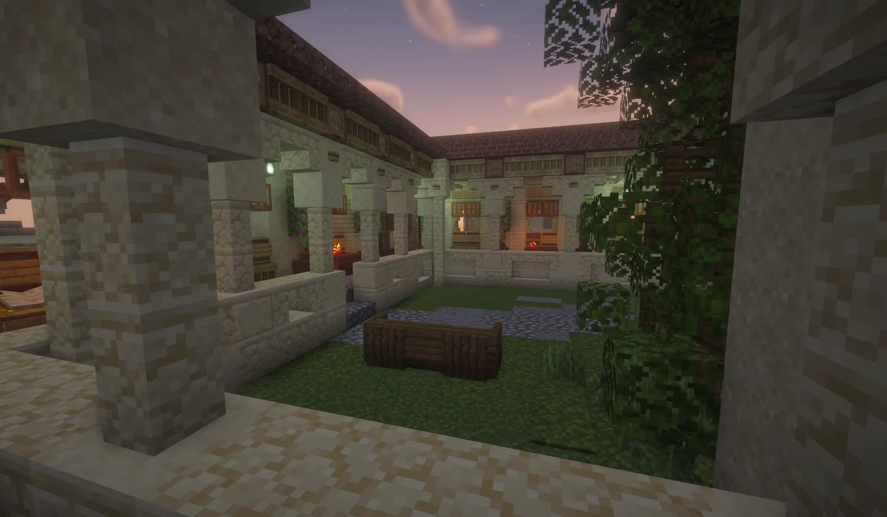

Het bestuur van Verathiel
De Raad
In Verathiel zijn Kerk en rijk één. De Pontifex leidt het land samen met de Heilige Raad, waar geloof, bestuur, oorlog en diplomatie samenkomen.
De Heilige Raad
Acht zetels, als de Acht Geboden
De Heilige Raad ontstond in de eerste eeuwen van Verathiel, toen duidelijk werd dat het rijk niet alleen door wereldlijke macht bijeen kon worden gehouden. Daarom zitten er zowel de hoogste geestelijken als de belangrijkste vertegenwoordigers van het wereldlijk bestuur.
-
Pontifex
Hoofd van Kerk en staat. Draagt het hoogste geestelijke én wereldlijke gezag.
koning -
Bisschop
Hoogste geestelijke onder de Pontifex. Waakt over de eenheid van de leer.
hertog -
Bisschop
Hoogste geestelijke onder de Pontifex. Waakt over de eenheid van de leer.
hertog -
Bisschop
Hoogste geestelijke onder de Pontifex. Waakt over de eenheid van de leer.
hertog -
Aartsvicaris
Persoonlijk adviseur van de Pontifex.
raadgever -
Legatus
Hoogste militaire bevelhebber van Verathiel.
generaal -
Gezant
Verantwoordelijk voor diplomatie en buitenlandse betrekkingen.
ambassadeur -
Rijksvoogd
Vertegenwoordigt het wereldlijk bestuur en de graven.
graaf
De Raad waakt in de eerste plaats over de eenheid van Kerk en rijk. Grote religieuze kwesties, conflicten tussen gebieden, oorlogsdreiging, diplomatieke betrekkingen en belangrijke bestuurlijke besluiten worden binnen de Raad besproken. Ook ziet hij toe op de uitleg en bescherming van het Luminisme.
Niet iedere beslissing wordt door de Raad genomen, maar bij zaken die heel Verathiel raken is de Heilige Raad het belangrijkste overlegorgaan van het rijk. Daarmee vormt de Raad het punt waar geloof, bestuur, oorlog en diplomatie samenkomen.
De Raad van nu
Wie Verathiel leidt
De lijn der Pontifexen
Vijf dragers van het hoogste ambt
Van Elian, die Verathiel in 360 N.A. stichtte, tot Pontifex Lars. Klik op een Pontifex voor meer.
Hiërarchie
Heersen is een last, geen beloning
Elke rang draagt een kerkelijke titel. Naast elke titel staat de rang waarmee hij op de server overeenkomt.
-
Pontifex
koningHoogste geestelijke leider en staatshoofd van Verathiel, gekozen door de Heilige Raad.
-
Bisschop
hertogDraagt het Licht over een bisdom. Ons doel is van heel Quartum één bisdom te maken.
-
Aartsvicaris
raadgeverZiet toe op de geestelijke en politieke zuiverheid van het land.
-
Maarschalk
generaalVoert de Wacht van het Licht aan.
-
Abtsheer
graafHeer over een abdij en de landen die erbij horen.
-
Tempelier
elitesoldaat“Het wapen is geen teken dat zijn Licht groter is dan dat van een ander.”
-
Geloofswachter
soldaat“De Wacht bestaat niet om strijd te zoeken, maar opdat anderen haar niet hoeven te voeren.”
-
Monnik
herbergierHoudt de Lichthuizen open, waar reizigers voedsel, warmte en kennis vinden.
-
Gelovige
burgerGeestelijke, gelovige of gewoon burger. Ieder draagt een Lichtvonk.